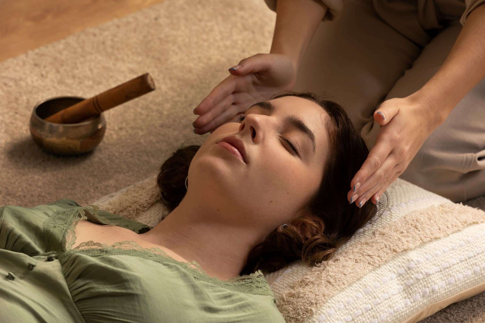
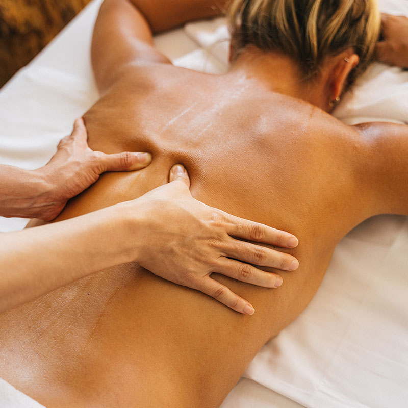
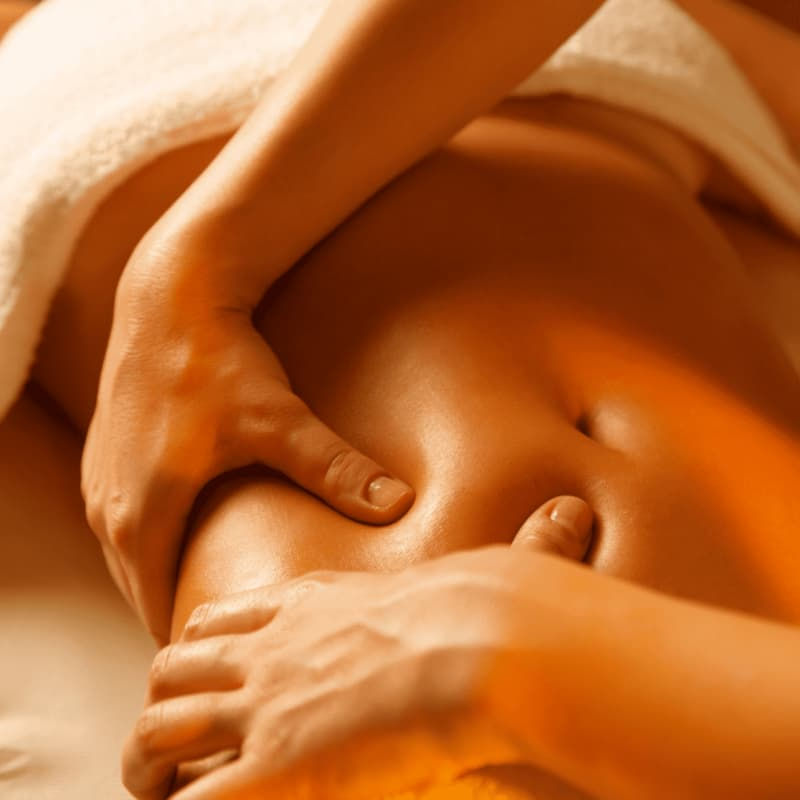
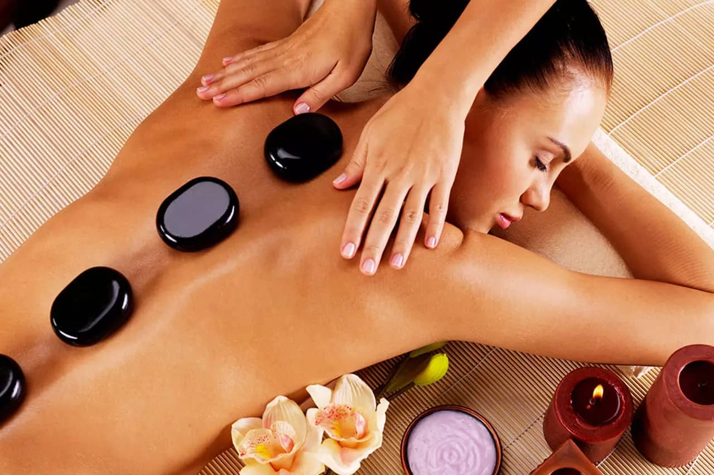
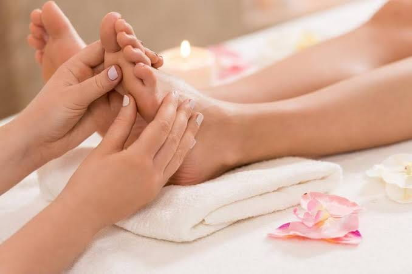

REIKE
Prática integrativa de relaxamento que utiliza a imposição ou aproximação das mãos. Pode ser procurada como complemento ao autocuidado e não substitui acompanhamento de saúde.

Drenagem Linfática
Técnica manual com movimentos suaves e ritmados, que pode auxiliar no manejo de inchaço em situações específicas, conforme avaliação profissional.

Massagem Relaxante
Massagem com manobras suaves e ritmo contínuo, planejada para proporcionar um momento de relaxamento e bem-estar, respeitando o conforto de cada pessoa.

Massagem Desportiva
Técnica manual direcionada às necessidades de pessoas fisicamente ativas, com manobras ajustadas ao objetivo e à tolerância individual. Não substitui avaliação de lesões ou dor persistente.

Massagem Modeladora
Massagem com manobras firmes aplicadas em áreas definidas, com intensidade adaptada ao conforto. Pode causar vermelhidão temporária e não substitui hábitos saudáveis nem promove emagrecimento.

Massagem com Pedras Quentes
Massagem relaxante que combina manobras manuais e pedras aquecidas a uma temperatura confortável, sempre verificadas pelo profissional antes do contato com a pele.

Massagem Relaxante com Vela nos Pés
Cuidado relaxante para os pés que utiliza vela cosmética apropriada para massagem, derretida e testada em temperatura segura. Não se utiliza vela comum sobre a pele.

SPA dos Pés
Ritual de cuidado dos pés que pode incluir higienização, imersão, esfoliação e hidratação, conforme o protocolo combinado e as necessidades da pessoa.

Reflexologia
Técnica de pressão e toque em áreas dos pés, realizada para promover relaxamento e bem-estar. Não diagnostica nem trata doenças ou condições de órgãos internos.

Hidratação com Argila e Parafina
Protocolo cosmético que combina máscara de argila e aplicação de parafina cosmética para cuidado da pele. A escolha dos produtos e a temperatura são avaliadas antes da aplicação.